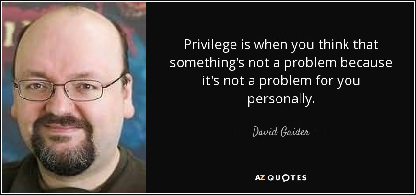
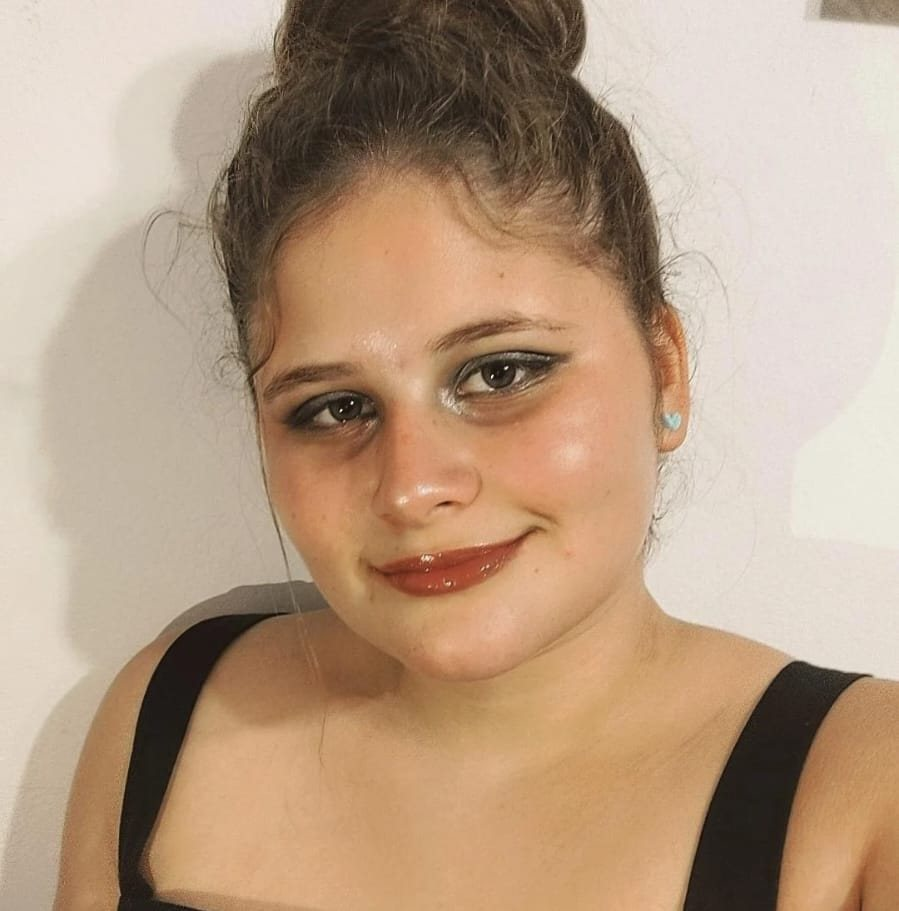
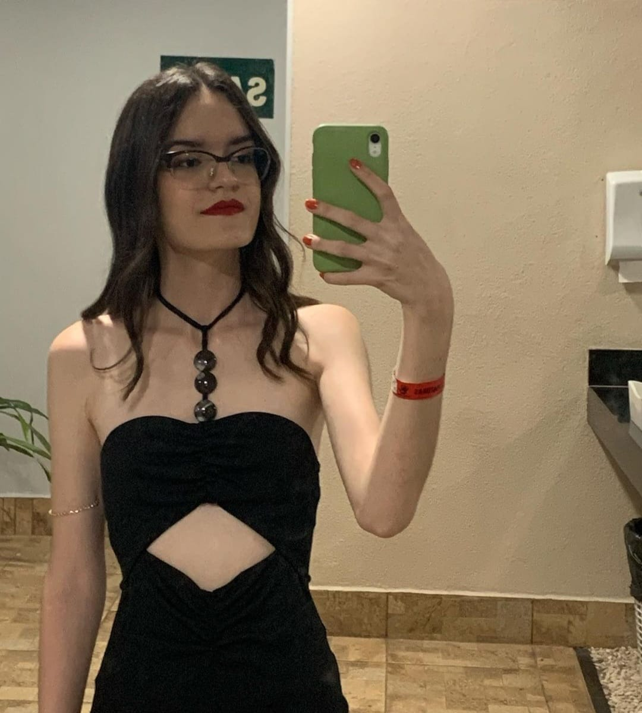
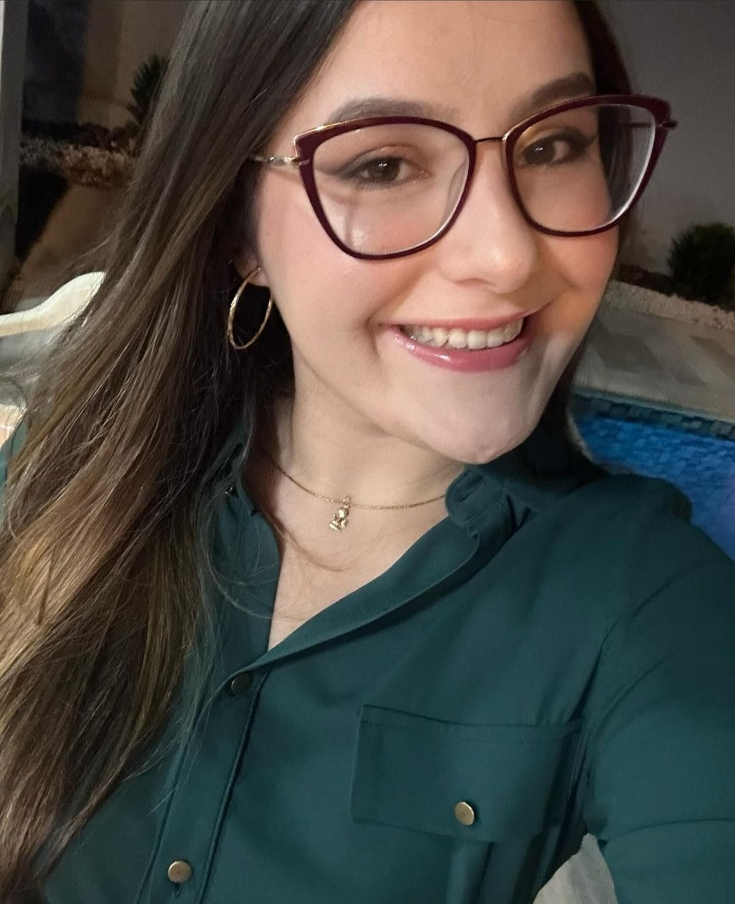

Através deste site daremos dicas de como você pode lidar com suas dores, crises, problemas e questões. Todos possuem problemas mas nem todos possuem os mesmos acessos,em nosso país existe uma grande desigualdade social que afeta milhares de pessoas. É nosso dever lutarmos juntos para levar mais igualdade apoio para todos, tirar os estigmas que fazem as pessoas acharem que psicólogo é frescura, para loucos, bobabgem, falta de ter o que fazer. Com esse site queremos deixar um manual geral de tudo que pode ajudar as pessoas, esperamos que usem e gostem.
Conteúdo escrito do site desenvolvido por:
Maria Carolina Calixto Costa

Danielle Elisa Baldassa

Marina Garcia Leal
Michelle Daiana Izidoro
Miguel Petito Elias
Referências utilizadas para a criação do site: